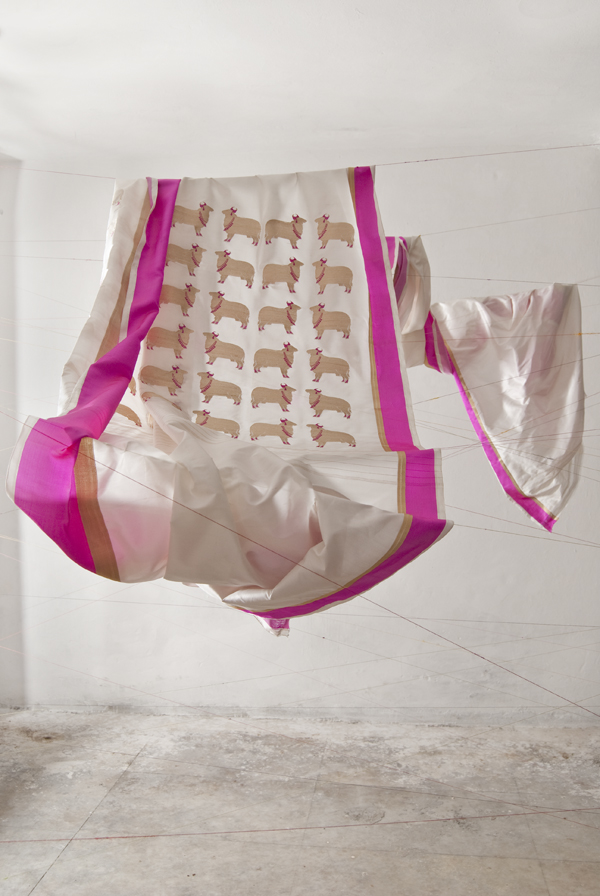
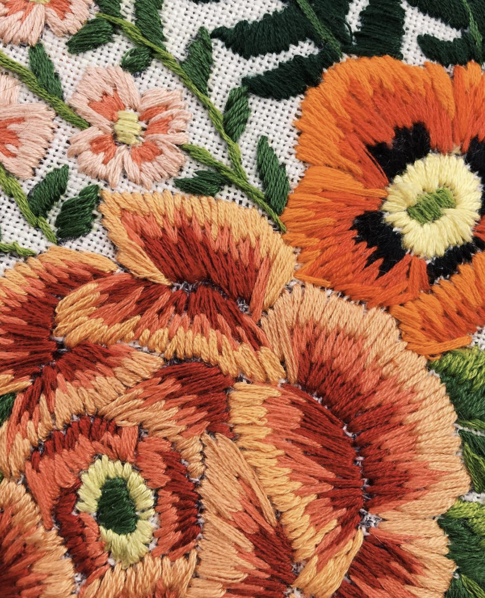
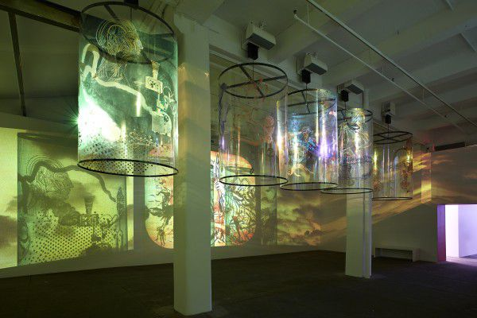

Questions
1. Design focuses a lot on the visual and touches upon other sensory processes, but how can we push design to further stimulate sensory experiences that can be easily overlooked? The olfactory, tactile and taste?
2. The word design elicits a certain image people associate with the concept. What are these stigmas that are attached to the word design, how/why did they develop, and is it important or necessary to address these stigmas?
3. Screens provide a new (digital) canvas for design and art. But do screens take away from our holistic experiences in the world? How can we integrate the two? How can screens and digital media enhance the physical world rather than take away from it?
Readings
Microinteractions by Dan Saffer (Ch. 1)
This assigned reading for our class highlighted the importance of details in interaction design and brought up a lot of broader questions in mind. Some of the quotes that stuck out to me:
"The design of your product is only as good as its smallest part"
"We use them unquestioningly now, and only really pay attention to them when someone designs a better way, or the technology changes and allows for or forces a new way of performing the microinteraction."
"Ditch the Almond Milk: Why everything you know about sustainable eating is probably wrong"
I also read an interesting article by Tony Naylor for the Guardian. The article focuses on how our 'sustainable eating' habits may actually cause more harm than good. It challenges our commonly-accepted perceptions and elicited a lot of fired up responses. It made me think of how trends start, how they persist and eventually evolve. How do we as humans just forms opinions and drop them so readily?
Observations
What your smart devices know (and share) about you
This TED talk challenges us to think about the devices we trust so easily and take for granted, while shedding light on the kind of data these devices actually collect from us, and how that data is eventually used to connect with us further. It's a little eery almost and shows the power technology holds over us and the responsibility that comes with its developement and usage.
Blue PLanet
I've also been watching Blue Planet, since I've recently started to become really interested in the deep sea life and aquatic systems. It's so absurd that 70% of the planet we live on is covered by water, and yet we only know 5% of what lives and breathes down there. It also brings up questions of whether we have any right to invasde those systems further and where the line of exploration must be drawn... if at all.
Images + Methods

Raw Mango by Sanjay Garg
"Raw Mango is a brand of contemporary Indian handwoven textiles crafted using traditional techniques."
Their designs and clothes are rooted in Indian history and philosophy while blending in influences of the modern Indian woman. It's an exciting and successful mix of the old and the contemporary as the brand reimagines the past while maintaining its integrity.
Tessa Perlow
Perlow adopts a rough and organic form of embroidery thate evokes a lot of energy in her pieces. She explores the reach of embriodery by testing new materials and 'canvases'. She's modernizing the "old" hobby of embroidery and using modern methods such as social media to share her work too. She motivated me to start embroidering which my parents make fun of me for now.
In Searh of Vanished Blood, Nalani Malani